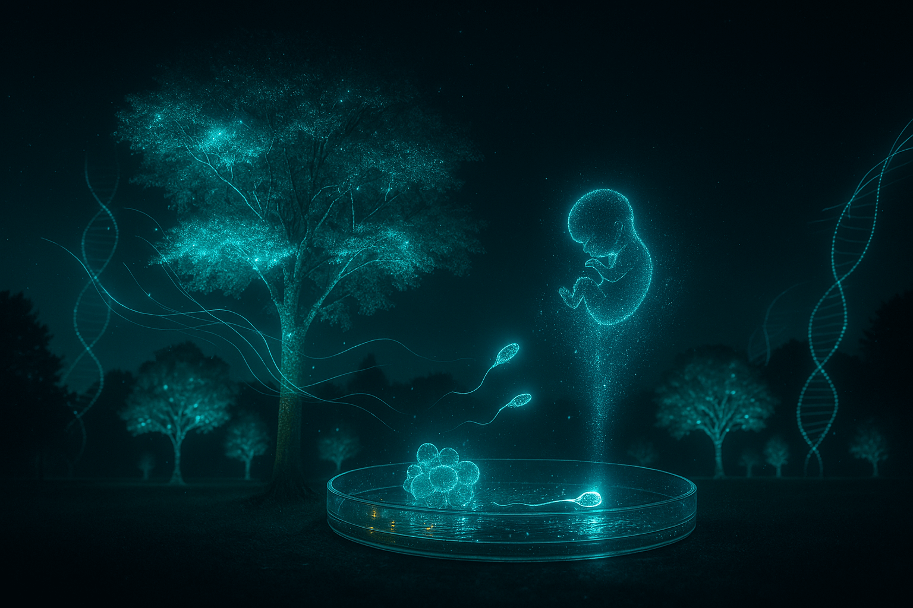

Glowing Plants: The Living Energy of the Future
Imagine walking through a city at night — no streetlights. No LEDs. Just **glowing trees** casting soft emerald light across the pavement, **flowerbeds pulsing in rhythm**, and **vines tracing neon paths** along buildings.
This is not a fairy tale. This is **2025**. And **living light** is here.
Plants That Emit Light — No Electricity
In 2017, MIT engineers made the first **glowing plant** using luciferase nanoparticles. By 2024, **genetically engineered petunias** glowed for **weeks** — powered only by sunlight.
Now, **Light Bio** sells **Firefly Petunias** — the first commercially available bioluminescent plant. They glow **50x brighter** than the original MIT version.
“We gave plants the ability to use their own energy to emit light.” — Dr. Karen Sarkisyan, Light Bio co-founder
How It Works — Biology Meets Photonics
Two pathways now exist:
| Method | Duration | Brightness | Status |
|---|---|---|---|
| Nanoparticle Infusion | 4 hours | Low (reading light) | Research |
| Genetic Engineering | Entire lifecycle | High (street-level) | Commercial |
Genetic version: Four firefly genes inserted via **Agrobacterium**:
- Luciferase — the enzyme
- Luciferin — the fuel (recycled from caffeic acid)
- Regulators — turn glow on at night
Result: **Self-sustaining bioluminescence** — recharged daily by photosynthesis.
“It’s a biological lamp — living, self-healing, and beautiful.”
Why It Matters — Beyond Beauty
Global lighting uses **15% of all electricity** — ~2,000 TWh/year. Replacing **10%** with biolight = **200 million tons less CO₂ annually**.
Real-world pilots (2025):
- Singapore: 200 glowing trees along Orchard Road — **no streetlights needed**;
- Amsterdam: Bioluminescent bike paths — **zero energy, zero maintenance**;
- Tokyo: Glowing cherry blossoms — bloom in light **and** color.
The Next Step — Programmable Light
Using **CRISPR-Cas12**, researchers now tune:
- Color: Green, blue, violet, warm white;
- Intensity: From candle glow to floodlight;
- Pattern: Pulsing, breathing, or motion-triggered.
Coming 2026: **Glowing grass** for football fields — **no floodlights, no glare, no heat**.

Not Only Benefits — The Risks
Critics warn:
- Gene flow: What if glowing pollen spreads to wild plants?
- Light pollution: Disrupts nocturnal animals (moths, bats);
- Ethics: Are we “playing God” with nature’s night?
**Light Bio’s solution**: **Sterile plants only** — no seeds, no spread. All trials in **contained urban zones**.
A World Where Nature Glows
By **2030**, we may see:
- Living streetlights — 1 tree = 10 LED lamps;
- Home biolamps — a pot plant that replaces your bedside light;
- Glowing agriculture — farmers work at night under their own crops.
NASA is testing **glowing algae** for Mars habitats — **light + oxygen + food** from one organism.
“When light becomes alive, the boundary between nature and technology disappears.” — Dr. Michael Strano, MIT, pioneer of plant nanobionics